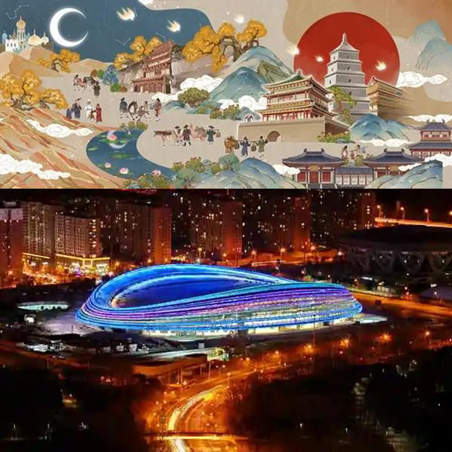
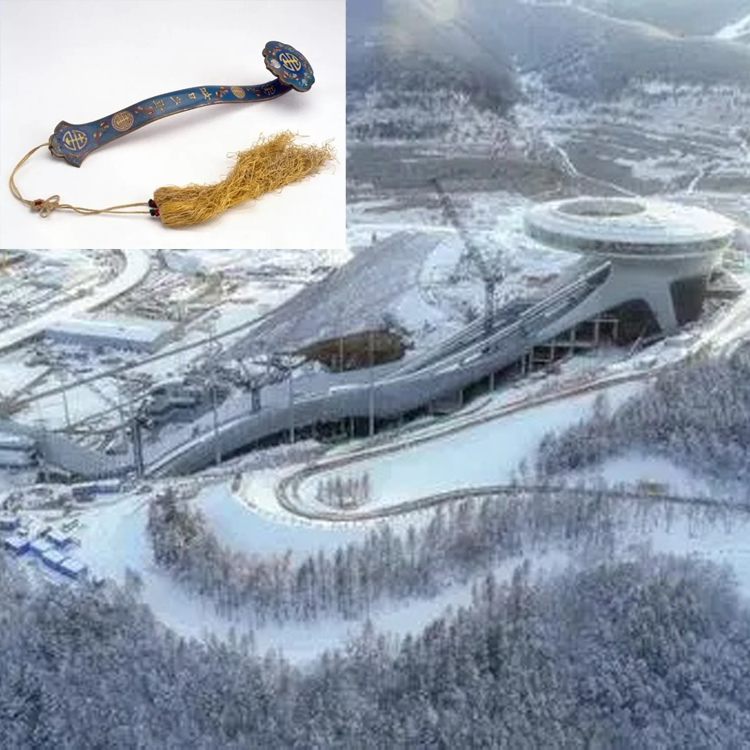
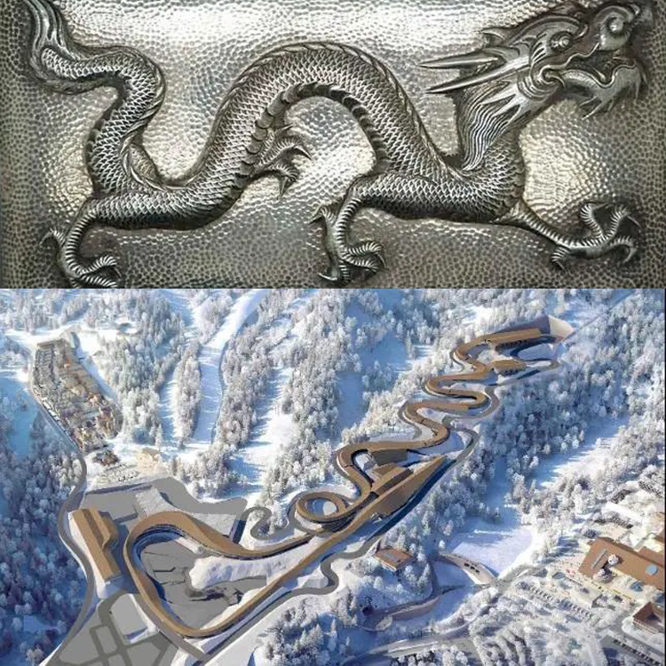
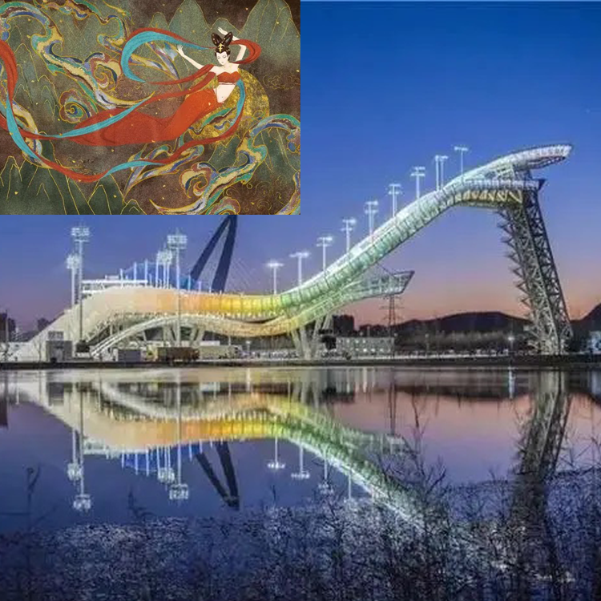

返回

2022北京冬奥会比赛场馆
国家速滑馆
国家速滑馆的设计理念来自于丝绸之路，又被誉为“冰丝带”。它是唯一新建的冰上竞赛场馆，其设计理念来自一个关于冰和速度结合的创意。银白色的外结构宛如一圈圈如冰丝带，急徐旋转着攀援、上升，象征着2022年的22条“冰丝带”交织成茧，新一代的奥运之星从此破茧而出。

2022北京冬奥会比赛场馆
国家跳台滑雪中心
国家跳台滑雪中心的外形因为酷似中国传统的“如意”，所以被称作“雪如意”，“如意”是中国传统的吉祥之物，外形和灵芝相似，一般由玉或黄金材料制成，象征着顺心如意。这背后既有对冬奥赛事独到的中国文化表达，更有设计团队攻坚克难，将技术突破与审美立意相融合的设计理念。

2022北京冬奥会比赛场馆
国家雪车雪橇中心
国家雪车雪橇中心因为道路蜿蜒而酷似一条“游龙”，所以又被称为“雪游龙”。而“龙”是中国人浪漫主义的重要载体，也是民族的象征，有着吉祥的寓意，“翩若惊鸿，婉若游龙”的优美诗句更是让“雪游龙”栩栩如生。

2022北京冬奥会比赛场馆
首钢滑雪大跳台
首钢滑雪大跳台的设计理念来源于敦煌壁画中的飞天元素,因此有了“雪飞天”的美誉。其造型巧借敦煌飞天壁画，身形灵动飘逸，而场馆旁矗立的工业烟囱和冷却塔与跳台搭配相得益彰，正是工业遗产再利用的范本，宛若将敦煌飞天舞女搬入现实